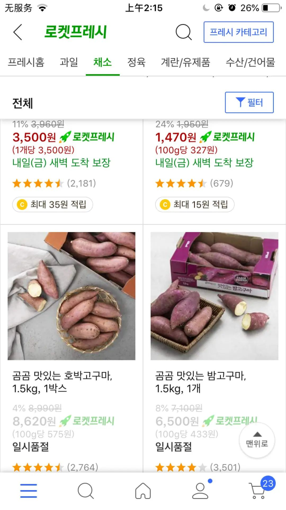
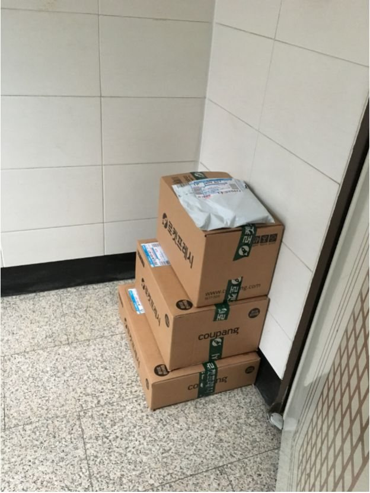

确诊人数暴增，韩国人终于戴起了口罩
原文链接 备份链接 截至今天（2月28日）16时，韩国确诊新冠肺炎感染者的总数已经升至2337人，单日累计确诊新增571例感染者，再次刷新韩国出现新冠病毒以来单日新增确诊感染者人数最大值。 一位在韩国处于居家隔离期的中国留学生为《人物》 …
澎湃新闻记者 于潇清
近日，韩国和日本新冠肺炎疫情防控形势日趋严峻，引起国际社会关注。
据韩国中央防疫对策本部2月28日最新通报，截至当天上午9点，韩国再新增新冠肺炎确诊病例256例，累计2022例，死亡病例达13例。
27日，韩国的疫情中心大邱市迎来疫情暴发以来单日增长最急剧的一天。当天，韩国全国新增病例505例，大邱占超过八成。目前，韩国超过六成的病例集中在大邱。而大邱的医疗资源已经连续多日处于超负荷状态。27日，由于病房不足，一名74岁男性新冠病毒确诊患者在家中自我隔离时病情恶化，送医院急救后不治身亡。这使人们担心由于床位不足可能导致更多病例死亡的发生。
同样是在27日，由于韩美两军中都出现了新冠肺炎患者，韩国联合参谋本部和韩美联军司令部表示，受新冠肺炎疫情影响，韩美决定推迟原定于3月初举行的联合军演。韩美因传染病疫情推迟联合军演日程尚属首次。
截至本文发稿，日本尚未报告新增的新冠病毒感染者，但据27日统计，包括游轮“钻石公主”号邮轮上的确认病例在内，日本国内累计确诊新冠肺炎病例919例，因新冠肺炎死亡累计8人。
28日，由于疫情扩大，日本东京的迪士尼乐园和大阪的环球影城相继宣布自2月29日至3月15日休园。同日，日本文部科学省2月28日向全国各都道府县教育委员会等发出通知，要求所有中小学学校停课。日本首相安倍晋三在众议院表示，“现在正是控制疫情扩大速度的极为重要时期”，因此希望社会理解停课的要求。
但日本媒体报道称，安倍政府突如其来的决定不仅使日本民众不安感增加，更使得学校和家长措手不及。文部省的通知也让有权实施停课的各地教委面临艰难决策，地方政府担忧停课可能引发更大混乱。
然而，同样严峻的疫情，映射到韩日两座城市——大邱与大阪的民众生活中却是两幅不同的光景。在韩国大邱市庆北大学留学的博士生小杨两周来切身感受到周围人对疫情的紧张感升级，而在日本大阪大学求学的博士生小高却被导师视作”过于紧张“。日前，他们分别向澎湃新闻讲述了两座城市不同的战疫故事。
大邱：我的“工作狂”教授也不来学校了
我是来自韩国庆北大学的小杨，目前正在攻读文学情报专业的博士学位。
2月5日我从国内回到大邱，在从仁川机场乘坐大巴前往大邱的路上，我注意到车上的乘客并没有佩戴口罩，当时还有同学邀请我到首尔一同居住，那时候感觉整个韩国都没有特别注意这场疫情。
回到大邱之后，我收到了学校国际交流部门让我尽量居家隔离14天的要求。当时我正好在搬家，所以隔离前先去了之前的出租屋拿东西。我清楚地记得当时在出租车上，司机师傅还主动提醒我关上车窗防止着凉。而当我14天的居家隔离结束之后，正值韩国尤其是大邱2月19日开始爆发疫情，20日当我再次乘坐出租车时，司机师傅则要求必须打开窗户保持通风。
现在，学校已经通知延期到三月中旬开学，大邱所有的公共图书馆、博物馆、教堂也都已关闭。疫情爆发之后，我只出门两次，都是去自己学校的研究室。虽然每次去我都会提前发邮件给我的同学和老师，请他们不要因为我的到来而困扰，但我总能感觉大家都会刻意保持一定的距离。同学告诉我，我那位“工作狂”一般、几乎每天都要来学校的教授，现在已经不来学校了。
现在，大邱街上几乎每个人都带着口罩，但是还能感觉出人们是在正常工作和上班的，我注意到饭店门口都张贴着消毒告示，里面也没有什么顾客，但有朋友告诉我，晚上营业的酒馆似乎生意还不错，是不是大家都认为酒精可以消毒呢？
坦白说，我没有看到特别多针对性的防控措施。就我所知，韩国国民都会定时收到短信，提示疫情相关的信息，同时各个住宿区附近也会有一些大喇叭广播，提醒大家要戴口罩，注意通风和卫生等。此外，政府将有计划地提供口罩，现在口罩成为了紧俏商品，大家排着很长的队伍购买口罩，我还看到有韩国朋友囤了一堆口罩拍照“炫富” 。

网络平台的一些货物已经售罄 本文图片均为受访者供图
大邱的“超级传播事件”出现之后，这几天网购的人明显增多，派送员们想来也更忙碌了。大部分的隔天派送都是早上七点之前完成，我们任何时候打开家门就可以收货，他们通过购物平台显示派送情况，用户收货有问题也可通过网络平台解决，不需要见面。这样快捷的派送服务大受欢迎，但有些食品就很快断货了。所以除新鲜食品外，干货之类的我会选择一般派送，大概耗费两到三天时间。
几天前，一般派送的派送员敲了我的门，我为了避免跟人接触，请他把货物放在门口。他说需要签字确认，于是我戴好口罩打开门。他是个中年男人，瘦高个子，当天下雨，他的雨衣和头盔上都有水，虽然头盔上有挡风玻璃，但能看出他的头发和衣领似乎都是湿的，嘴唇干得似乎要掉皮裂开了，显然已经工作很久，一脸疲惫。我签了字谢过他，他只说了声再见就快速离开了。

在大邱，人们已经普遍选择不出门而是通过快递购置货物
现在，中国留学生回到韩国后都要接受14天的居家隔离观察，大家普遍很配合。
大邱疫情爆发后，许多留学生开始考虑回国，但我还会继续坚持一段时间这样的居家学习生活的状态。
大阪：我担心疫情，日本朋友说我“多虑了”
我是来自日本大阪大学的小高，目前是一位灾难重建专业的在读博士，我所在的城市大阪最近刚刚出现新冠肺炎确诊病例，身边的日本朋友都开始说担心疫情发展，但是我的直观感受是，看不到大家尤其是年轻人的实际行动，可以说除了戴口罩之外，大家的生活仍然非常正常。
就在26日，东京都内的一些大型活动比如演唱会开始停止了，之前我身边的日本年轻人们还在计划着如何去东京观看演唱会，现在他们还在说“如果不是取消了的话肯定要去的”。

即便是在大阪，口罩也已经成为非常紧俏的商品
一个非常直观的变化是，上周我出门的时候街上佩戴口罩人数的比例大概是三分之一，但现在有近八成的人都佩戴口罩，口罩和消毒水因此也成为了紧俏甚至买不到的商品。不过年轻人戴口罩的要少一些，在我打工的食品店，店员里只有我一个人是佩戴口罩的，我的日本同事们都没有戴。
在大阪，中国留学生会尽量减少出门，但我的日本朋友给我的感觉是非常“淡定”，他们会正常逛街购物。他们说也在关注这个疫情，但新冠肺炎在中国的死亡率并不是很高，病故的患者不少都是有基础疾病且年纪较大。我对他们说，不希望日本的疫情也越来越严重，他们说我“过虑了”。

大阪的药妆店专门贴出说明称店员会佩戴口罩，但请大家不要担心
日本现在的一些公司开始实行“错峰上班”的模式，但我身边的朋友会利用错峰上班的时间去健身房锻炼，对于他们来说错峰似乎并不是为了防控疫情。
就我所见，大阪目前还没采取更多的防控措施，也没注意到包括公共交通设施在内的场所有为民众测量体温的措施。
大阪大学每两天会更新疫情速报发给每一位同学，并开展网上直播的疫情防控学习会。学校的速报里提醒，如果有发热情况就请自行在家隔离，速报上会附有一些诊所的联系电话，让民众自行联系。
整体的感觉是日本是将疫情的防控寄希望于企业和个人自身的决定，以至于大家也并不特别清楚要怎么做。日本歌手西川贵教26日还在网上抱怨自己不清楚演唱会到底是否要继续，批评政府没有给到民众明确的信息。大阪市从29日开始，高中以外的学校都要停课了，我也注意到日本首相安倍晋三宣布要求全国中小学3月2日起停课的消息，但我感觉到，针对这些决定，大家更多的是抱怨。
在日本的中国留学生现在挺团结的，大家都会相互调剂口罩。我也有回国的想法，中国同学听说后帮我找到了N95口罩。而当我把自己想回国的想法通过邮件告知我的导师后，他并没有直接同意，字里行间也在暗示我是过于紧张了。现在，我已经查询好如果回到我的故乡江苏之后，自己应该按规定做哪些事情。我准备今天再当面去找导师谈一次。
戳这里进入
“全国新型冠状病毒感染病例实时地图”↓↓↓
本期编辑 邢潭
推荐阅读


原文链接 备份链接 截至今天（2月28日）16时，韩国确诊新冠肺炎感染者的总数已经升至2337人，单日累计确诊新增571例感染者，再次刷新韩国出现新冠病毒以来单日新增确诊感染者人数最大值。 一位在韩国处于居家隔离期的中国留学生为《人物》 …
原文链接 备份链接 韩国1月20日发现首例确诊病例，此后一个月疫情发展缓慢，到2月18日确诊31例。2月19日后突然暴增，一周新增超过1200例。 18日确诊的第31号患者，被视为“超级传播者”。 韩国新冠疫情的一大特征是，在特定群 …
原文链接 备份链接 仁川国际机场。图片来源：Yonhap 记者：潘金花 “ 文在寅强调，“最大程度封锁”措施并非封堵和围困该地区，而是最大限度阻断疫情扩散，有关部门需争取使疫情拐点在本周之内到来。 ” 韩国中央防疫对策本部25日通报说，截 …
原文链接 备份链接 “若不能有效阻断社区传播， 大邱疫情很可能扩散至全国” 2月24日，首尔市举行紧急会议，称将采取“先发制人”的措施遏制疫情，包括设立24小时运行的筛查中心，让医护人员在此检测疑似病例。图为首尔市市长朴元淳（右二）在会议 …
原文链接 备份链接 我一度后悔自己离开了医生这个职业，他们那么缺人，我却不能跟他们一起冲上去。难过、绝望、内疚…… 口述 | 冯 翔**** 整理 | 陈 冰 …… 冬天腊梅花， 夏天石榴花， 晴天都是人， 雨天都是伢。 过路的看风景， …